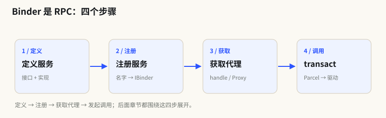
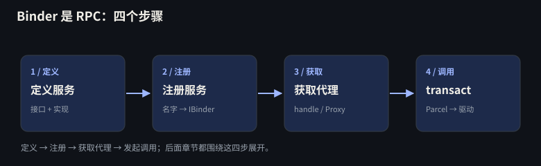
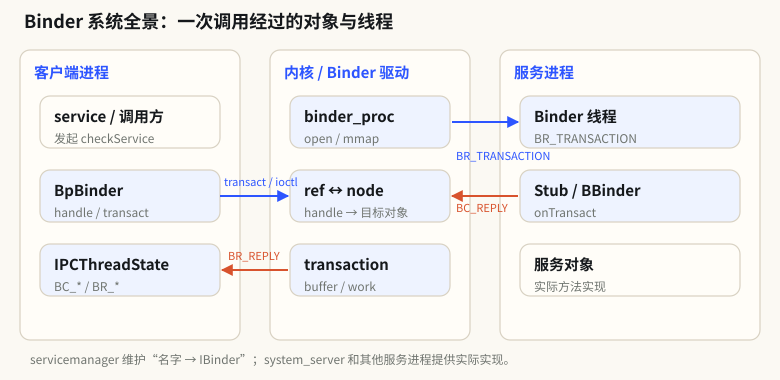
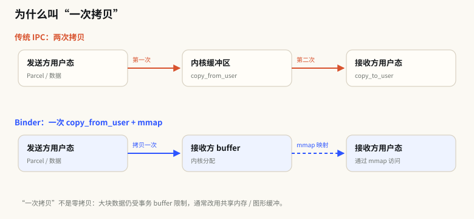
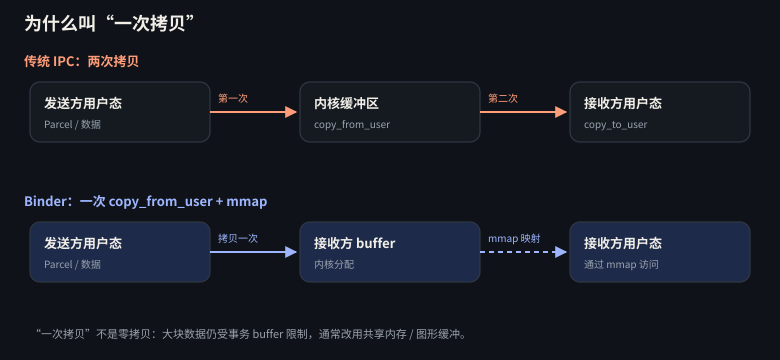

- Android
- 15 / SDK 35
- AOSP
- Android 15
- 样本
- servicemanager / 系统服务
- 验证方式
- adb shell
第 0 章确认了一件事：不同进程有各自的虚拟地址空间，不能直接传指针，必须通过内核搬运数据。现在的问题是：Linux 已经提供了 pipe、socket、共享内存，为什么 Android 还要再造一个 Binder？
一、Binder 是 RPC：四个步骤
Binder 本质上是一个本机 RPC 框架：让 A 进程像调用本地函数一样调用 B 进程里的方法。它没有发明新的系统调用，而是把“打包参数、找到目标对象、投递事务、等待结果”这一整套流程标准化了。


这四步不是抽象概念，真机上可以直接看到。先查一个系统服务：
adb shell service check activityService activity: foundservice 命令本身就是一个 Binder 客户端：它拿到 IServiceManager，再按名字查找服务。下面的代码就是 checkService 这一路：
sp<IServiceManager> sm = defaultServiceManager();
if (strcmp(argv[optind], "check") == 0) {
sp<IBinder> service = sm->checkService(String16(argv[optind]));
aout << "Service " << argv[optind] <<
(service == nullptr ? ": not found" : ": found") << endl;
}再看系统里有多少个服务：
adb shell 'service list | wc -l'241241 行里包含一行表头，实际是 240 个服务。这个数量说明：Binder 不是某个业务进程的内部实现，而是 Android 系统服务之间普遍使用的通信方式。
二、Linux 已有 IPC，为什么不够
Linux 的 IPC 都能“传数据”，但传数据只是最低要求。把常见机制放在一起看：
| 机制 | 擅长什么 | 缺少什么 |
|---|---|---|
| pipe | 亲缘进程间传字节流，简单 | 没有对象身份、没有请求 / 响应语义 |
| Unix domain socket | 本机任意进程通信，能传 fd | 仍然是字节通道；对象、方法、生命周期要靠协议自己实现 |
| 共享内存 | 大数据、高吞吐 | 同步、互斥、安全和生命周期都要额外设计 |
| Binder | 本机面向对象的 RPC，带身份、引用和线程调度 | 有 buffer 上限；同步调用可能阻塞；实现复杂 |
所以问题不是“socket 不能传字节”，而是：每多一个系统服务，就要重新定义一套请求格式、对象表、超时和权限检查。这对系统开发者来说，维护成本和安全风险都很高。
三、Binder 补了什么
对新手来说，先记住三件事就够了：
1. 对象引用，而不是一串字节。客户端拿到的不是“服务端的端口号”，而是一个 handle。handle 在当前进程里对应一个 Binder 引用，驱动再把它解析到服务端进程里的对象。所以调用的是“某个对象的方法”，不是“往一个 socket 写一段数据”。
2. 方法调用和 Binder 线程。客户端调用一个方法，服务端由 Binder 线程接住并执行。服务实现必须考虑并发，不能假设自己在主线程。这也解释了为什么 Binder 服务不能随便做长时间阻塞。
3. 调用者身份和生命周期。Binder 事务会携带发送方的 UID / PID，服务端可以据此做权限检查；服务端进程退出后，客户端也需要知道远程对象已经失效，而不是一直等一个不会来的回复。身份和生命周期是 Binder 比“裸 socket”更适合系统服务的关键。
四、一次调用长什么样
把上面的内容串起来，一次调用大致经过：客户端进程里的 Proxy → 内核 Binder 驱动 → 服务端进程里的 Binder 线程 → Stub → 实际方法。


这条链路里最关键的三次“翻译”是：
- 接口调用 → Parcel：Proxy 把参数写进 Parcel。
- handle → 目标对象：驱动把客户端的引用解析成服务端对象。
- 请求 → 线程：驱动把事务投递给服务端的某个 Binder 线程。
第 2 章会把 Proxy、Stub、handle、Binder 线程拆开讲；这里先建立整体路径。
五、“一次拷贝”是怎么来的
传统 IPC 常见做法是两次拷贝：发送方用户态 copy_from_user 到内核缓冲区，接收方再从内核 copy_to_user 到用户态。Binder 让接收方提前把一块 buffer 映射到自己的用户空间，发送方只需把数据拷贝到这块 buffer：


这个 buffer 是在进程初始化 Binder 时打开的：
ProcessState::ProcessState(const char* driver)
: mDriverName(String8(driver)), mDriverFD(-1), mVMStart(MAP_FAILED) {
String8 error;
unique_fd opened = open_driver(driver, &error);
if (opened.ok()) {
// mmap the binder, providing a chunk of virtual address space to receive transactions.
mVMStart = mmap(nullptr, BINDER_VM_SIZE, PROT_READ, MAP_PRIVATE | MAP_NORESERVE,
opened.get(), 0);
// ...
}
// ...
}真机上也能看到这个映射：
adb shell 'cat /proc/$(pidof system_server)/maps | grep "/dev/binder"'9d134000-9d232000 r--p 00000000 00:12 969 /dev/binder所以“一次拷贝”是相对传统两次拷贝而言，不是零拷贝。大块数据仍然受事务 buffer 上限影响；音视频帧这类数据通常改用共享内存 / 图形缓冲，而不是硬塞进 Binder 事务。
六、Binder 的代价
Binder 不是“什么都用它”。新手先记住三个限制：
- 同步调用会阻塞线程：服务端处理慢，调用方就等着；不要在 Binder 线程里做长时间阻塞操作。
- 有事务 buffer 上限：一次传太大的数据会失败；大块数据用共享内存或图形缓冲。
- 不是零拷贝：核心数据仍要复制到接收方 buffer。
判断标准很简单：结构化、需要对象和权限语义的本机调用，优先 Binder；大块数据、高吞吐、跨设备通信，选别的机制。
七、自测题
1. Binder 相比 Unix socket 最核心的增量是什么？
不是“能传字节”，而是对象引用、方法调用语义、调用者身份和线程调度。socket 是字节通道，Binder 是面向对象的本机 RPC。
2. 为什么说 Binder 不是零拷贝？
发送方的数据仍要复制到接收方的 Binder buffer。它避免的是传统 IPC 中“用户态 → 内核 → 用户态”的两次方向性拷贝；“一次拷贝”是相对说法。
3. handle 为什么不是全局服务 ID？
handle 是客户端进程里的引用编号，只在当前进程的 Binder 引用表里有意义；同一个服务在不同进程里可以有不同 handle。
4. 什么时候不该优先用 Binder？
大块数据、高吞吐媒体流、跨设备通信等场景，可能更适合共享内存、图形缓冲或网络协议。Binder 适合结构化的本机对象调用。
八、本章小结
Binder 不是为了“发明一个新的 socket”，而是给 Android 的进程模型补上一层统一的对象化 IPC：
- 用 handle / node 表达对象引用；
- 用 Parcel / transaction 表达一次调用；
- 用 Binder 线程处理并发；
- 用 UID / PID 和生命周期机制补上安全与失效处理。
记住一句话：Binder 是本机 RPC，不只是“传字节”。下一章会把这句话拆成五角色、handle/ref/node 和同步调用的执行路径。